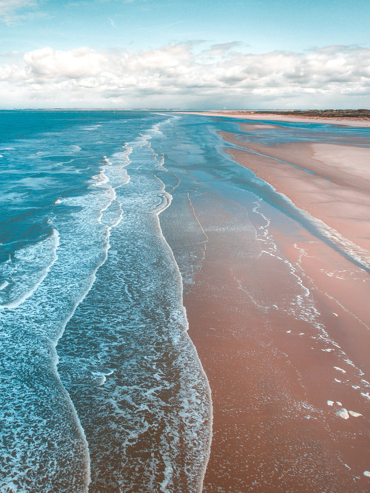

First slide label
Some representative placeholder content for the first slide.

Second slide label
Some representative placeholder content for the second slide.

Third slide label
Some representative placeholder content for the third slide.
Welcome to Marine Aero- & Hydrodynamics Laboratory led by Dr. Asim Önder at Department of Marine Environment and Engineering of National Sun Yat-sen University. The lab pursues innovative fluid mechanics and CFD research to solve geophysical and engineering problems involving complex multi-phase, multi-scale flows in the marine environment.
The current research interests include:
- Air-sea interactions: wind-wave interactions, Langmuir circulations, gas and heat exchange
- Offshore wind energy : metocean characterization, aero-hydro coupling, atmospheric-stability effects, land-sea transition
- Tsunamis : bottom friction, sediment transport
- Oceanic/atmospheric turbulence: large-eddy simulation of near-surface layers, Reynolds-stress modelling, non-equilibrium turbulence
- Computational science : machine-learning models for interfacial flows, adjoint methods, immersed boundary methods, adaptive methods